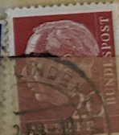
| SOURCE | TITLE| IMAGE MATCH | click to source page |
| eBay | Germany Postage ~ Deutsche Bundespost ~ 20D Red Stamp ~ Posted/Used ~ 1954 ~ G56 | eBay | 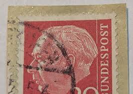 |
| Invaluable.com | Sold at Auction: 1854 1d sg36 plate 55 IB re-entry superb used, crisp 330 Halifax numeral ri | 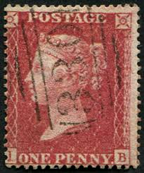 |
| Etsy | Vintage Repvbblica Italiana 40 Lire 1954 Stamp/ Republic of Italy Stamp - Etsy | 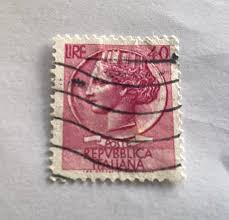 |
| eBay | DEUTSCHES BUNDESPOST ~ Dr. Theo Heuss ~ 20PF Red Stamp ~ Posted ~ 1954 ~ E09 | eBay | 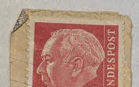 |
| eBay | Italy 1929 SC: 217 Red 20c Lightly Hinged Stamp | eBay | 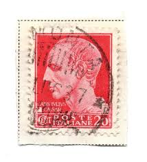 |
| eBay | 1854-57 PENNY RED STAR PERFORATED J I GREAT BRITAIN 1 STAMP HINGED USED #95 | eBay | 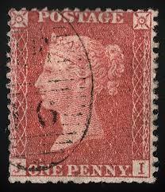 |
| eBay | NETHERLANDS:1923 SC#127 Used Queen Wilhelmina T | eBay | 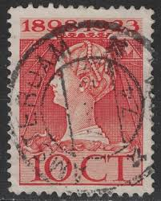 |
| eBay | Netherlands Postage ~ Queen Juliana ~ Brown 10₵ Stamp ~Cancelled/Posted ~1953-01 | eBay | 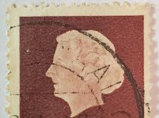 |
| eBay | 1940 GERMAN OCC. FRANCE ALSACE ELSASS STAMP #N33 WITH OBERNAI SON SOTN CANCEL | eBay | 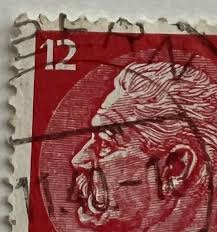 |
| eBay | Queen Wilhelmina Jubilee 1898-1923 25th Anniversary Stamp Lot/ Netherlands | eBay | 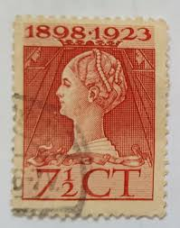 |
| commonwealthstamps.com | Postage Stamp Stamps Great Britain 1858 Queen Victoria Penny SG 43 Red Plate 72 Fine Used | 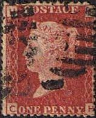 |
| eBay | 1901 Gold Coast Sc# 37 - 1d surcharge, Queen Victoria - MH postage stamp Cv$12 | eBay | 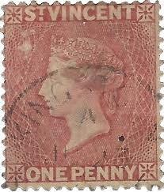 |
| eBay | France - Sc# 9 Used (tiny tiny shallow thin?) / see images - Lot 0525133 | eBay | 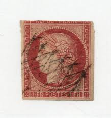 |
| eBay | St Vincent #1a Mint Rare Pre Print Paper Fold Unused (No Gum) Pair Variety | eBay | 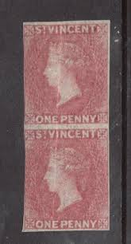 |
| Paul Fraser Collectibles | Great Britain 1872 1d rose red Plate 156. SG43 | 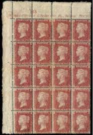 |
| eBay | Italy 1929 SC: 217 Red 20c Used Stamp | eBay | 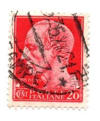 |
| eBay | Postage Revenue ~ King George VI ~ Brown 1½D Stamp ~ Posted/Used ~ c.1940's ~S18 | eBay | 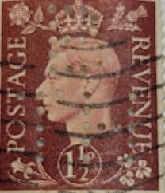 |
| eBay | Vintage Post Card - Denmark - 1965 - The Royal Guard | eBay | 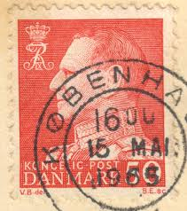 |
| Paul Fraser Collectibles | Global Stamp Collection – British, US, Empire & Chinese – Page 46 | 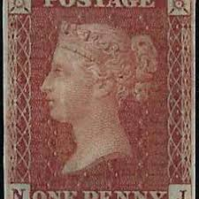 |
| eBay | GERMANY ~ Deuirches Reich ~ Pau Von Hindenburg~ Cancelled/Posted ~ c.1934 | eBay | 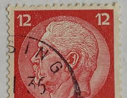 |
| eBay | Preussen 1859 MI 13 signed Brun CANC VF | eBay | 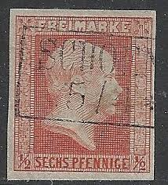 |
| eBay | UK GB Great Britain Stamp Scott 79 1p Queen Victoria 1880 CV$13 Used T17035 | eBay | 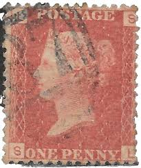 |
| eBay | 1841 1d Pale Red-Brown Pl 75 SA 4m Irish 435 TAUM Worn Plate VFU Cat. £45.00 | eBay | 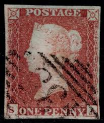 |
| eBay | DENMARK 1948-1950 King Frederik IX 30 Ore (HBX) | eBay | 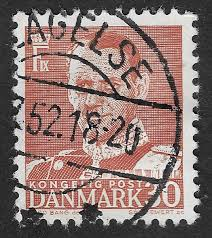 |
| eBay | FRANCE SCOTT 36a USED FINE - 1863 80c CAR/YELSH NAPOLEON III ISSUE CAT $24 | eBay | 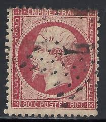 |
| eBay | Germany Prussia 1850 Mi 1 SC 2 SG 3 German States King Friedrich Wilhelm IV MNG | eBay | 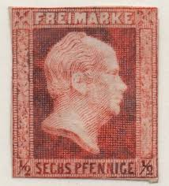 |
| eBay | GB 1864 SC 33 P211 QUEEN VICTORIA 1p ROSE RED USED NO GUM FINE/VERY FINE | eBay | 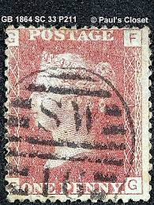 |
| eBay | GB QV PENNY RED IMPERFORATES on COVER PLATED + POSTMARKS 1842-54 ..PRICED SINGLY | eBay | 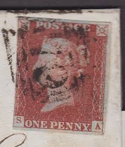 |
| eBay | Great Britain SC#4?, #8? #33 (plate 220) and #68 | eBay | 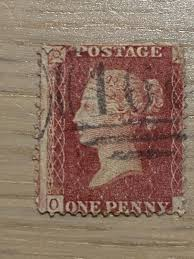 |
| eBay | Postage Revenue ~ King George VI ~ Brown 1½D Stamp ~ Posted/Used ~ 1940's ~ G31 | eBay | 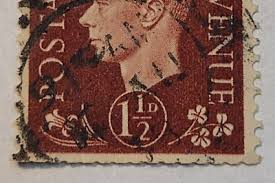 |
| eBay | 25 3c Washington Perf 15.5 Type I Paid in Circle Fancy Cancel Cat $180 S940 | eBay | 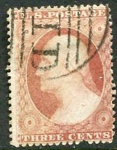 |
| Todocolección | holanda, nederland - v/f 10 c - reina juliana - Buy Antique stamps of Netherlands on todocoleccion | 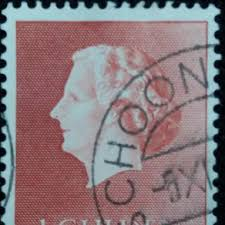 |
| eBay | Stamp Russia USSR 1937. SG#728b. PERF. 12 1/2 x 14.Pushkin EXTREMELY RARE #OF68 | eBay | 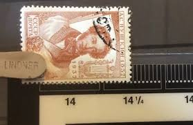 |
| eBay | FRANCE TIMBRE type NAPOLÉON N°24 oblitéré ÉTOILE de PARIS | eBay | 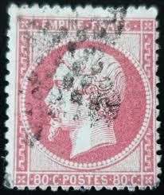 |
| eBay | Lot of 3) 1923 Netherlands Holland 2C to 10C Used Hinged Stamps | eBay | 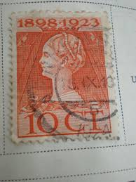 |
| eBay | France 1849 YV 6 CANC VF | eBay | 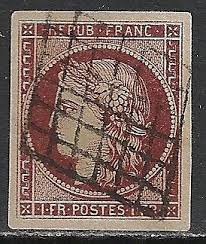 |
| eBay | ST VINCENT 1875 QV 1/- CLARET WMK SMALL STAR SIDEWAYS USED | eBay | 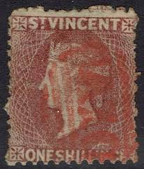 |
| eBay | Netherlands Postage ~ Queen Juliana ~ Brown 10₵ Stamp ~Cancelled/Posted ~1953-15 | eBay | 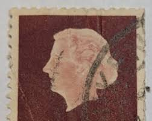 |
| eBay | 1105] Denmark stamp postmark ESBJERG 01-09-1964 | eBay | 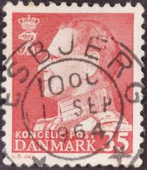 |
| eBay | France 1849 YV 6B 3 large margins CANC Fine | eBay | 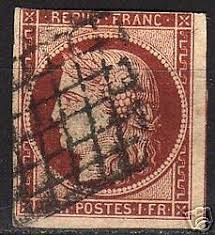 |
| eBay | Toscana 1851 1 Cracy N.4 Used With Cancellation Montepulciano R1 Certificate | eBay | 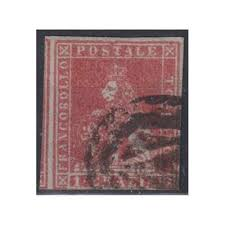 |
| eBay | DDR Michel No. 309 YI gestempelt geprüft | eBay | 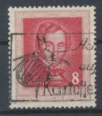 |
| eBay | LUXEMBOURG STAMP 1944-1946 Grand Duchess Charlotte 11/2 Fr Used (HBX) | eBay | 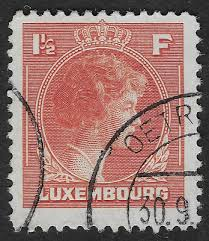 |
| eBay | 1856 1d RED BROWN SG29 LC P14 BLUE PAPER C8 PLATE 34 LETTERS " N - A USED " | eBay | 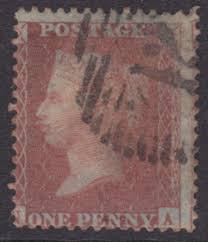 |
| eBay | Thomas Jefferson 2 Cent Red Antique Rare United States Postage Stamp- Used Stamp | eBay | 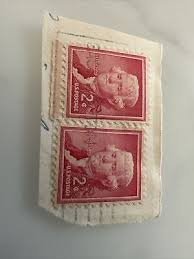 |
| eBay | Thomas Jefferson 2 Cent Red Antique Rare United States Postage Stamp- Used Stamp | eBay | 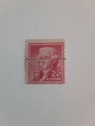 |
| eBay | U5525 GREAT BRITAIN 1857 Queen Victoria 4d rose SG 66 wing margin used | eBay | 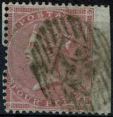 |
| eBay | SG 43 Great Britain 1864-79. One penny red plate 160 lower right hand block | eBay | 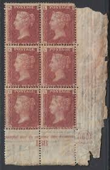 |
| eBay | ITALY SCOTT 409 USED F/VF - 1938 5L LT RED BROWN ISSUE - VICTOR EMMANUEL III | eBay | 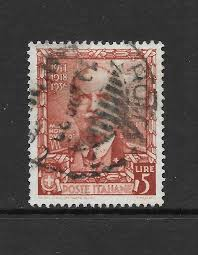 |
| eBay | GERMANY SCOTT # 371, USED, FINE-VERY FINE+, GREAT PRICE! | eBay | |
| eBay | Postage Revenue 1D Stamp ~ King George VI ~ Red ~ Posted ~ 1940's -01 | eBay | |
| eBay | SG40, 1d rose-red PLATE 42, LC14, FINE USED. Cat £18. LG | eBay | |
| eBay | U2870 GREAT BRITAIN 1855 Queen Victoria 4 pence wing margin used | eBay | |
| pthealthcare.com.vn | Extremely Rare Vintage United States Postage Jefferson 2 cents stamp ; Red | |
| eBay | Great Britain: Lot 14 (Scott #20b plate 14 VG/F Used) 2021 Scott cat. value $375 | eBay | |
| eBay | Netherlands Postage ~ Queen Juliana ~ Brown 10₵ Stamp ~Used/Posted ~1953 ~ B06 | eBay | |
| tv-unna.com | Worldwide Stamp Mix Collection - 100 To 4000 Different Stamps | UK Romania Stamps | |
| eBay | GB QV 1854 Scots cancel INDIA STREET 1d red small crown p16 sg17 | eBay | |
| eBay | Canada King George V Mint Unhinged Plate Block Broken E Rate Variety 192i | eBay |